Spaß mit der künstlichen Intelligenzia – jetzt aber wirklich!
Nachdem gestern meine weiteren Versuche gescheitert waren, mit freier Software brauchbare Bilder zu produzieren, die für interaktive Geschichten mit Twine oder Ren’Py geeignet sind, bin ich wieder reumütig zu meinem ersten und bisher einzigen Favoriten für diese Aufgabe zurückgekehrt und habe meine heutige Zeit wieder mit der AI Comic Factory verplempert.
Da der Server auf Hugging Face erstaunlicherweise über mehrere Stunden auch nicht zickte, habe ich eine Reihe von Testbildern produziert, die alle den gleichen Prompt verarbeiteten und für jeden der dreizehn »Stile«, auf die die Anwendung trainert ist, mindestens je eine Comic-Seite erzeugte1.
Der Prompt hieß »a little girl meets a little boy with a huge raven on a small island in kensington garden« und regelmäßige Leser des Schockwellenreiters vermuten zu Recht, daß ich Alice mit Peter Pan zusammentreffen lassen wollte. Doch die KI hatte da ganz andere Vorstellungen2. Das sind einige der Ergebnisse:
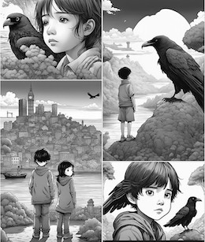 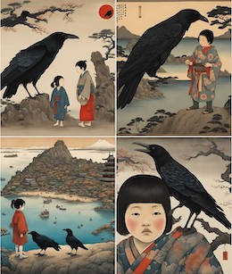 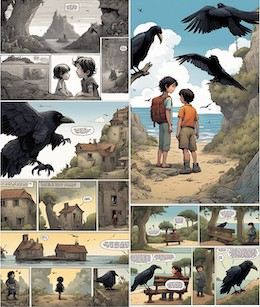
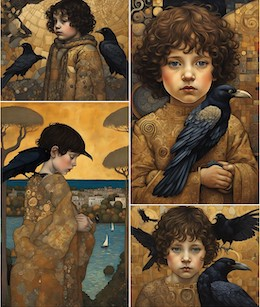 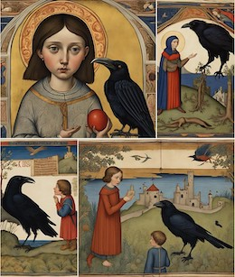 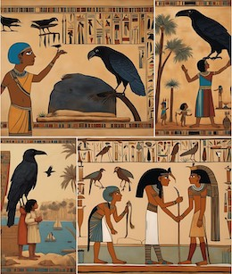
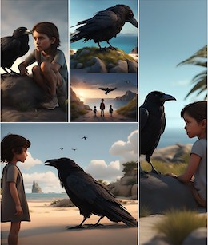 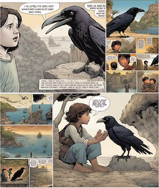 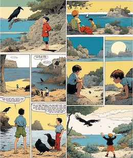
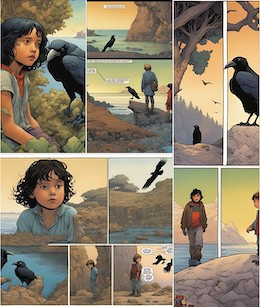 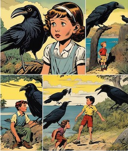 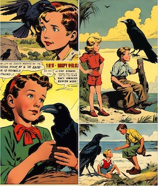
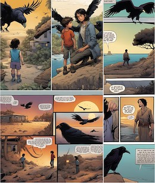
Mit einem Klick auf die Vorschaubilder kommt Ihr je auf eine Seite mit einer Vergrößerung.
Die Stile sind (jeweils von links nach rechts):
- Reihe 1: Japanese, Nihonga, Franco-Belgian (ein von Métal Hurlant inspirierter Stil).
- Reihe 2: Klimt, Medieval, Egyptian.
- Reihe 3: 3D Render, Armorican (hier lebten die unbeugsamen Gallier), Haddock (ganz klar eine Anspielung auf »Tim und Struppi«).
- Reihe 4: Humanoid, America (1950), Flying Saucer (eine Hommage an die Science Fiction Comics der 1950er Jahre).
- Letzte Reihe: American (modern)
Während einige der Stile deutlich unterscheidbar sind, ist dies bei anderen schon schwieriger: So sind die Ergebnisse von American (1950) und Flying Saucer kaum zu unterscheiden, den französisch-belgisch inspirierten Stilen Franco-Belgian, Armorican und Haddock ist die gemeinsame Herkunft ebenfalls anzumerken und auch zwischen American (modern) und Humanoid sind kaum Unterschiede zu erkennen. Das ist aber nicht unbedingt ein Nachteil, denn so lassen sich die Ergebnisse auch leicht kombinieren.
Und es gibt Dinge, über die stolpert die Künstliche Intelligenz doch noch hin und wieder: Waren es in diesem Beitrag die Arme, die der leichtgeschürzen Kriegerin aus dem Rücken wuchsen, machten beim obigen Prompt vor allem die Raben Probleme: Mal hatten sie drei Beine, mal standen sie in der Luft und hin und wieder fehlte ihnen der Kopf.
Dennoch, ich kann mir auch nach diesen Tests immer noch gut vorstellen, die AI Comic Factory als Bildproduzent für meine interaktiven Geschichten zu nutzen. Zwar ist bei den Input-Prompts viel Phantasie gefragt und zum anderen muß man sich bei den Geschichten schon an den Bildern entlanghangeln (auch dafür benötigt man viel Phantasie). Aber das könnte mir Spaß machen. Still digging!
Jedenfalls habe ich mir diese Seite erstellt, damit ich die Übersicht über die dreizehn Stile behalte. Ich hoffe, das ist auch für Euch da draußen nützlich.
War sonst noch was? Ach ja, der YouTuber Mr Lemon hat das Video »Create Your Own Comic Books With AI« veröffentlicht, das ebenfalls die AI Comic Factory behandelt. Außerdem schlägt er zur Nachbearbeitung den Online-Dienst Canva vor, der – glaubt man dem Tutorial – einige nette Features besitzt. Da der Service zumindest in der Grundversion kostenlos zu nutzen ist, sollte ich ihn mir daher auch mal genauer anschauen. Das Video ist Teil der riesigen Playlist »Best AI Generators«, die in zur Zeit 39 etwa fünfzehnminütigen Videos alle möglichen Spielereien rund um den Hype zur gekünstelten Intelligenzia vorstellt. Die Reihe wurde erst vor wenigen Tagen aktualisiert, es ist also durchaus wahrscheinlich, daß sie noch fortgesetzt wird.
Fußnoten
Für manche Stile habe ich mehrere Comicseiten erzeugt, da sich die Ergebnisse teilweise so ähnlich waren, daß ich sichergehen wollte, daß ich keine Fehler gemacht hatte.↩︎
Lediglich der Stil Japanese (ausgerechnet!) hatte mit dem »Big Ben« in einem Panel wenigstens einen kleinen Hinweis auf London.↩︎